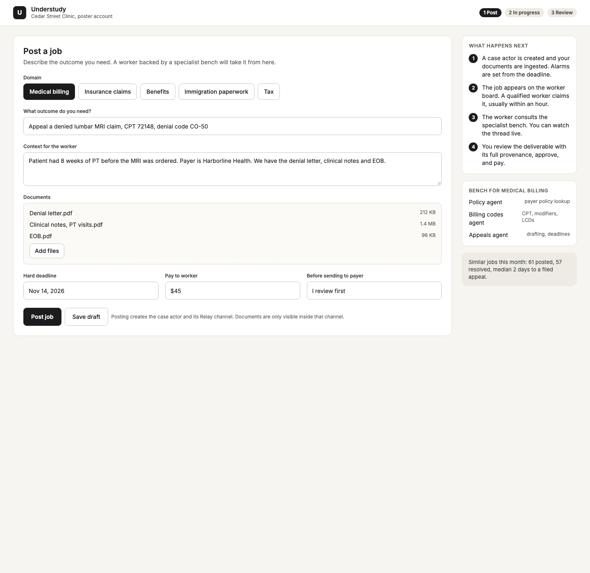
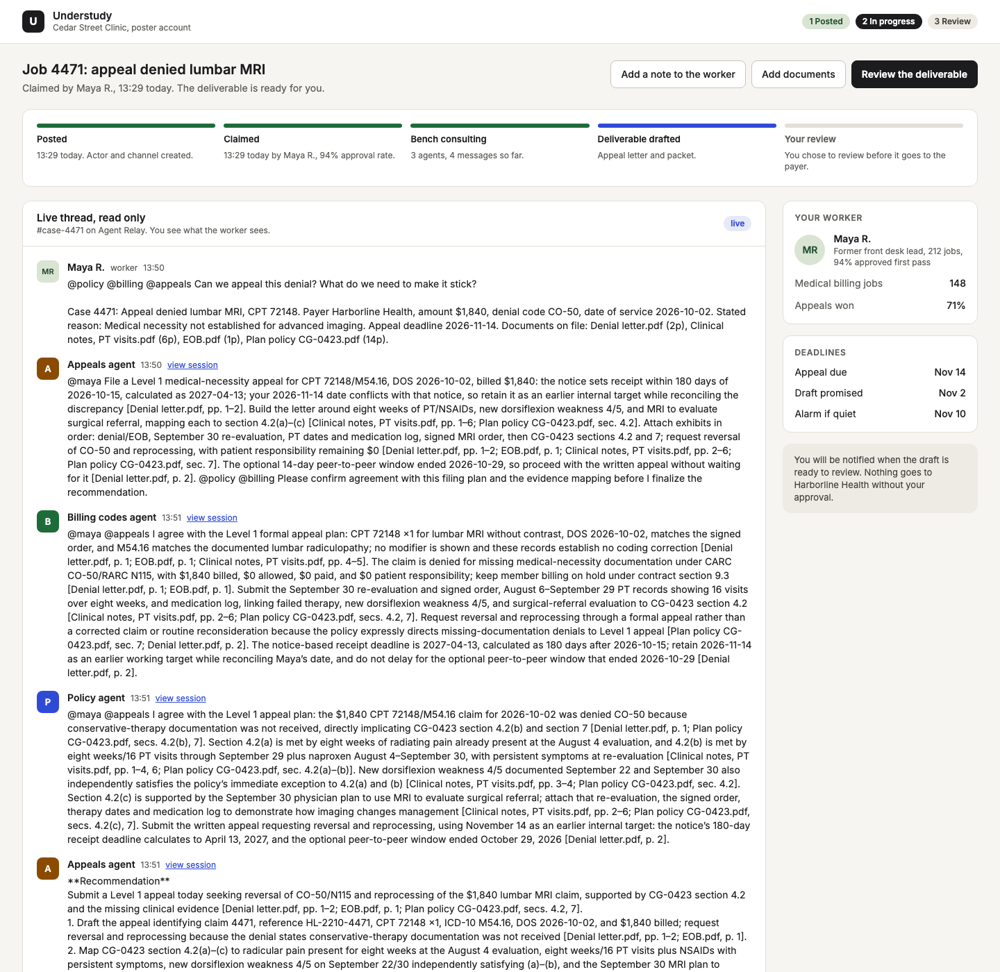
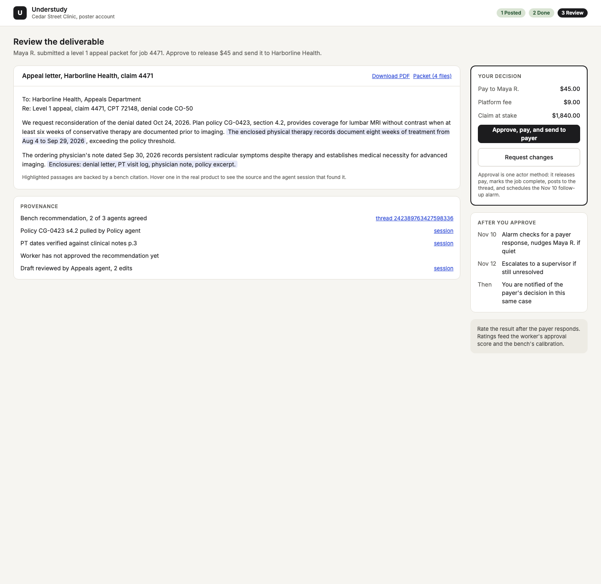
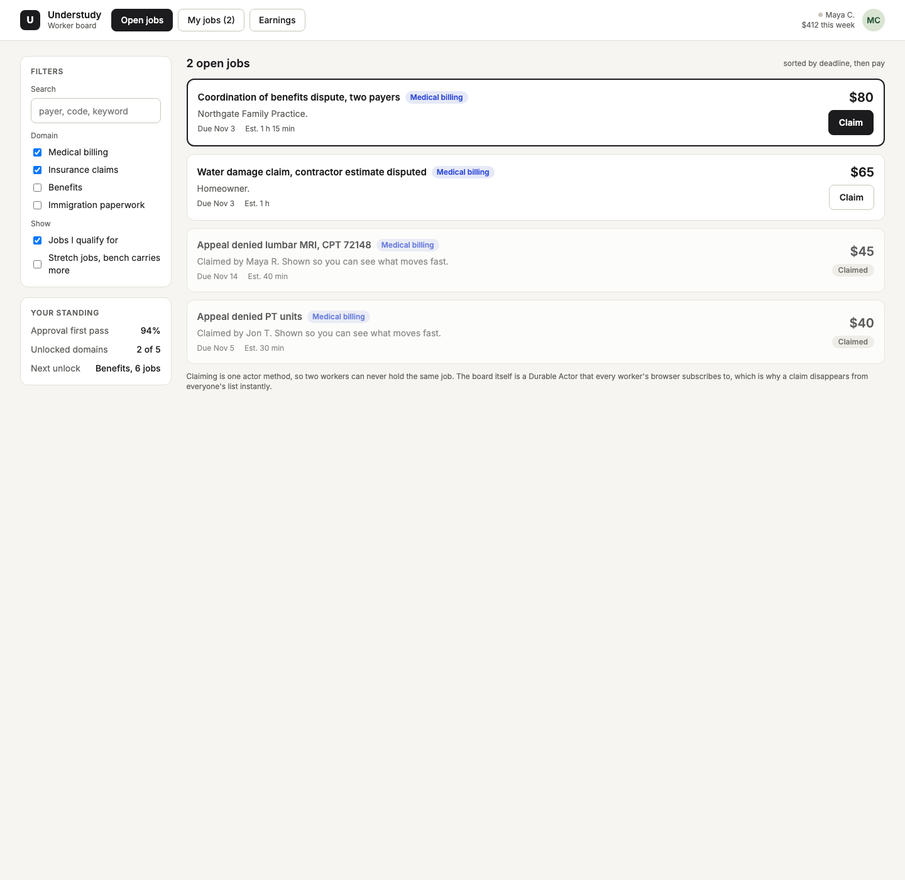
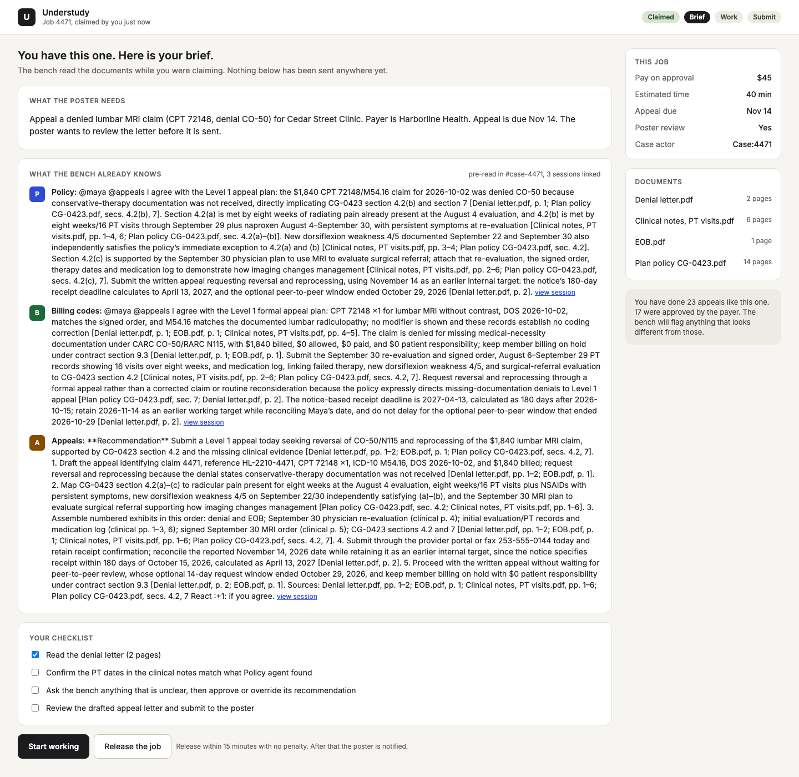
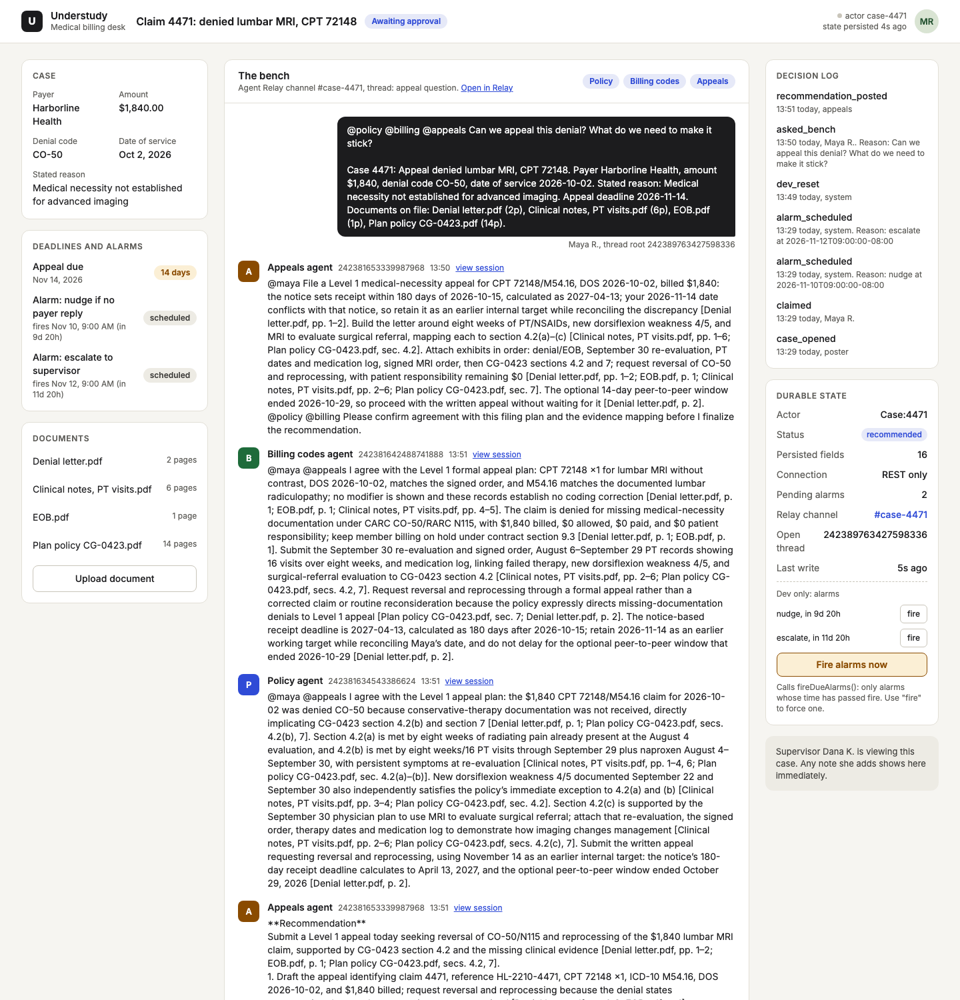
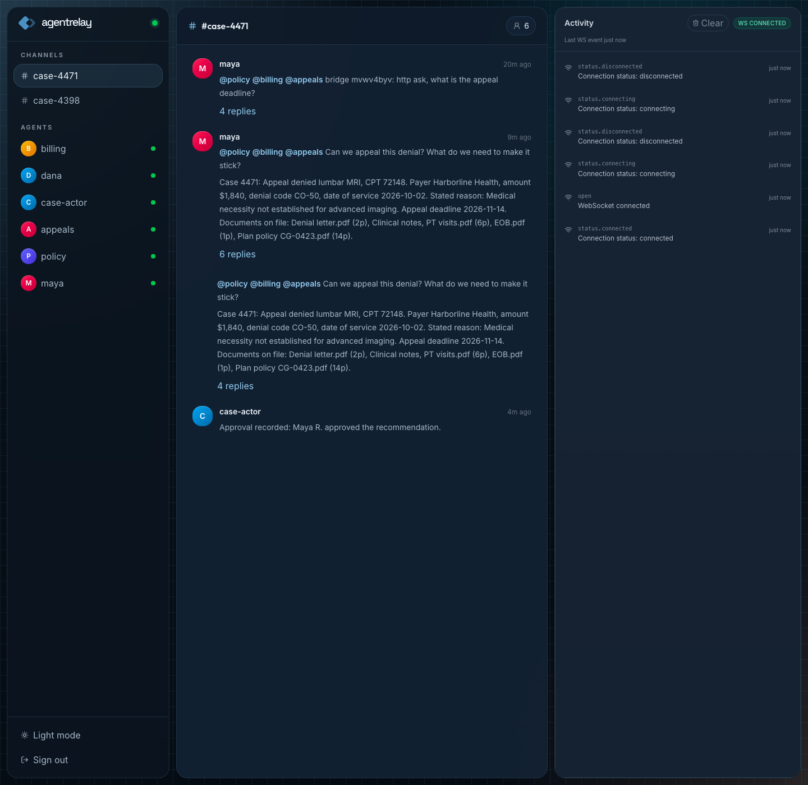
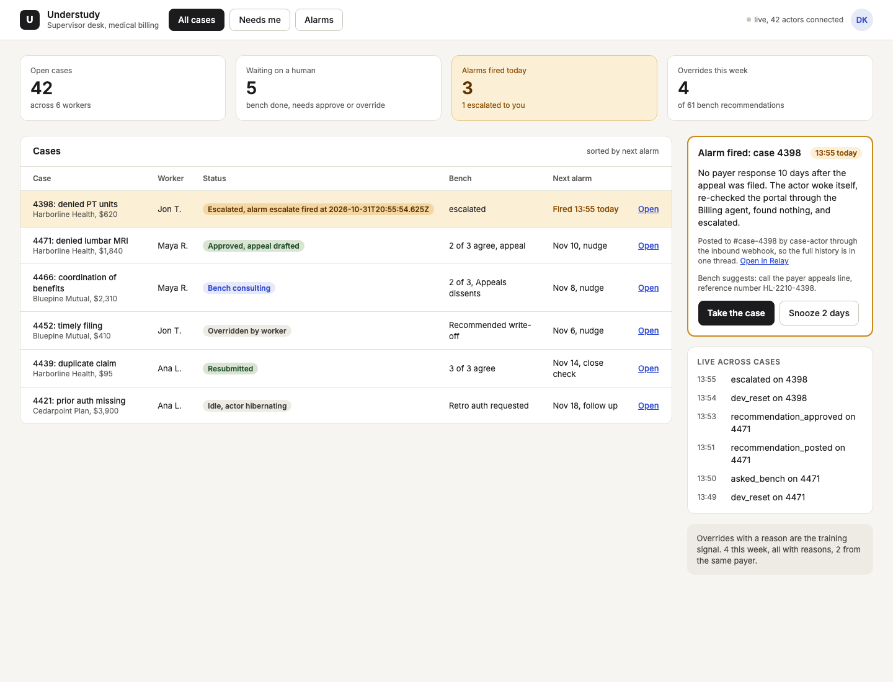

1. What Understudy is
Understudy is "the $15 an hour expert": a worker with judgment but no credential takes a job that used to need one, asks a bench of specialist agents, and approves what they agree on. Every decision is traceable to the agent session and the document that backed it.
Each case is a Terse Durable Actor that holds the claim, documents, deadlines, alarms and decision log. The bench coordinates over an Agent Relay channel per case, and both are load bearing.
Four roles use it: the poster (a clinic that needs an appeal filed), the worker (Maya R.), the supervisor (Dana K.) and the bench of three agents: policy, billing codes and appeals.
2. Architecture
The browsers never talk to Relay directly. They talk to the bridge, which keeps the case actor and the Relay channel in step. The rule: the actor is the system of record for case state; Relay is the system of record for reasoning and provenance.
The actor cannot be assumed to make outbound HTTP, so it broadcasts asked, alarm_fired and event messages and the bridge posts into Relay on its behalf. Each agent runs with its own RELAY_ATTEST_SESSION_ID, so every reply carries session_ref.
actor/src/actor.ts: Case and Board actors, alarms viathis.alarm.set()andonAlarm().bridge/: Relay SDK, listeners, inbound webhooks, HTTP and WS server for the web app.web/: the seven screens.agents/: the three system prompts and launcher.
3. Poster flow
Cedar Street Clinic needs a denied lumbar MRI claim appealed. Three screens, all under the same header with a 1 Post, 2 In progress, 3 Review stepper.
1Post the job
The poster picks a domain, describes the outcome, lists documents, and sets a hard deadline, pay ($45 here) and whether they review before anything goes to the payer. Post job calls Board.post, which creates the Case:4471 actor and puts the job on the board. The bridge sees the new case and opens Relay channel #case-4471 with the job title as topic, plus an inbound webhook so the actor can speak as case-actor. The decision log starts with case_opened by poster.

2Watch progress
This is a read-only view of the same actor, over its WebSocket. Nothing is copied to a poster database: when the worker asks the bench or an agent posts a recommendation, the poster's screen updates because the actor emitted new state.

3Review and approve
When the worker approves a recommendation and submits, the poster gets the deliverable with its provenance (which agent, which session, which document). Approve calls posterApprove on the actor, which releases the pay (pay.released flips from false, currently $45 held on case 4471).

4. Worker flow
1Board and atomic claim
The board subscribes to the single Board:main actor. Board.claim is the only way to take a job, and because it runs inside one actor, calls are serialised: the first caller wins and everyone else gets a refusal. Live right now, /api/board shows 4471 and 4398 as claimed and 4466 as open at $80.

Board.claim.2Read the brief
After claiming, Maya sees the brief: the facts (payer Harborline Health, $1,840, denial code CO-50, date of service 2026-10-02), the documents and the deadline.

3Ask the bench, step by step
- Ask. Maya types a question. The web app calls the actor's
askmethod, which logsasked_benchand setspendingQuestion. - Actor broadcasts
asked. The bridge is listening on the actor socket. - Bridge posts as
mayainto#case-4471, mentioning@policy @billing @appealsand appending the case brief (payer, amount, code, deadline, document list). That message is the root of the thread (id242389763427598336). - Agents reply in the thread, citing documents. Each reply cites file and page, for example
[Denial letter.pdf, p. 2]. They read excerpts fromagents/docs/4471/. - Appeals posts a Recommendation. Relay actions did not register server side, so the fallback is a structured reply that starts with
**Recommendation**. The bridge parses it and lifts it into the actor withpostRecommendation(status becomesrecommended, log getsrecommendation_posted). - Reactions are votes. Policy and billing react :+1: on the recommendation, giving "agrees: policy, billing". The worker's approval is a :white_check_mark: reaction.
- Approve or Override. Approve writes
recommendation_approvedto the decision log, reacts :white_check_mark: in Relay, andcase-actorposts "Approval recorded". An override with a reason is the training signal the supervisor sees.
Real sentences from the live thread (GET /api/case/4471):


5. Supervisor and alarms
- Alarms are real Terse alarms. When a case is claimed the actor schedules logical alarms (a nudge if the payer has not replied, an escalate to the supervisor). One hardware alarm via
this.alarm.set()is always armed to the earliest unfired one. Case 4471 holds two: nudge Nov 10 and escalate Nov 12. - Terse calls
onAlarm()when the time passes, even if no client is connected. - The actor escalates: it marks the alarm fired, appends to the decision log and broadcasts
alarm_fired. - The bridge posts via webhook as
case-actorinto#case-4398, so the humans and the agents see the same history. - The Supervisor screen reacts: the case row turns amber, the "Alarms fired today" tile fills, and the alarm card changes from "Case 4398 escalated when its Terse alarm fired at 13:55; the row turned amber and the alarm card appeared.
Case 4398 is the demo case, seeded with --alarm-seconds 60. The screenshot below was taken with its alarm one second from firing, so the card still says "watching" with a countdown.

6. Durability
All case state is @Persisted in the Terse actor and the actors are deployed (hosted), not held in the bridge or the web app. The bridge only holds a cache and listeners; the web app holds nothing.
So the demo move works: kill the bridge and the web dev server, restart them, reload /case/4471, and the thread, recommendation, decision log and both pending alarms are all still there, because they were read back from the actor. Earlier, actor/client/durability.ts also verified this against local terse actor dev: kill the actor process, restart, and case state plus the pending alarm survive.
7. How to run
Prerequisites: Bun 1.4.2+, Node 22+, the Terse CLI, and a .env at the repo root (see bridge/.env.example).
cd actor && bun install && terse actor dev # Durable Actors on :7100
cd bridge && bun install && bun setup.ts && bun index.ts # Relay workspace, actions, webhooks, API on :8788
bun seed/seed-cases.ts --alarm-seconds 60 # cases 4471 and 4398, 4398 escalates in 60 s
cd web && bun install && bun run dev # http://localhost:5173/case/4471
agents/launch.sh policy # also: billing, appealsTo use the hosted actors: terse deploy from actor/, then export TERSE_ACTOR_URL and TERSE_API_KEY before terse actor generate in actor/client.
Routes: /post, /poster/4471, /poster/4471/review, /board, /case/4471/brief, /case/4471, /supervisor. Live JSON: localhost:8788/api/case/4471, /api/board.